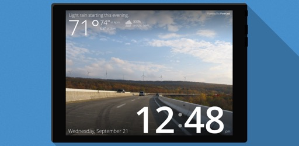
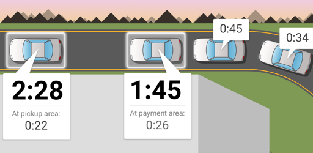
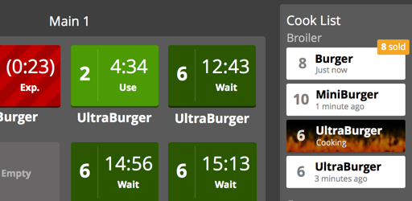
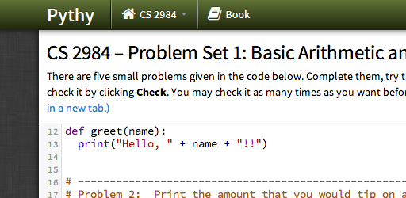
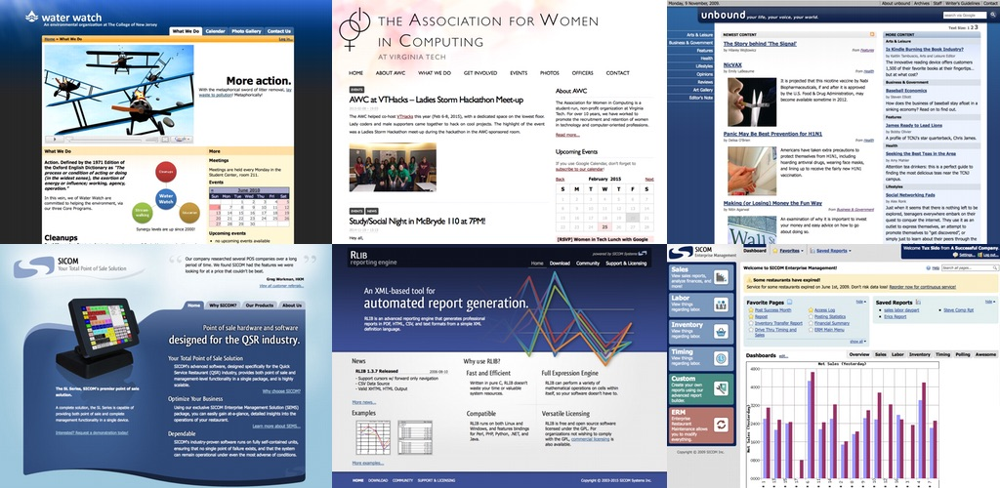

As an exiled infomercial chef, embrace your destiny and bring balance to the world once again! A story-driven side-scrolling RPG made using Unity.
Read more...
With this webapp, any small internet-enabled device can become a wall-mounted clock displaying the weather.
Read more...
An open-source, responsive webcomic site built using Github Pages and Jekyll.
Read more...
Stay in command of your restaurant's drive-thru with this highly visual way to monitor the the current status of all waiting vehicles.
Read more...
As a burger chef, you'll need to keep tabs on what you've cooked, what you're cooking, and what you will cook. Production Control is here to help.
Read more...
What if intro computer science students didn't have to install any software, and could start programming right away?
Read more...
Projects that, while interesting, didn't seem like they needed a whole page.
Read more...